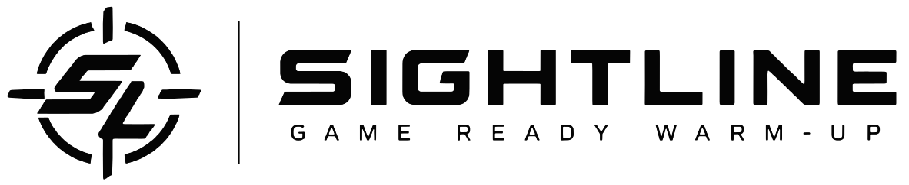

Pre-game routine
Visual reaction and cognitive warm-up. Not a medical or diagnostic tool.
A pre-game warm-up for your eyes and mind, in four parts.
Every session is shuffled. This phone remembers which questions, scripts and problems you saw in your last few sessions and rests them for a while. No results or personal info are kept.
Visual reaction and cognitive warm-up. Not a medical, diagnostic or treatment tool.
Paused